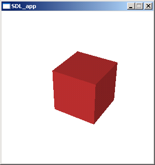

グラフィックイメージ処理
イメージファイルを読み込んで他のフォーマットに変換
JPEG ファイルを PNG ファイルに変換します。
import(jpeg)
import(png)
I(filename:string) = path.join(sys.datadir, 'sample', 'resource', filename)
image(I('Winter.jpg')).write('Winter.png')
イメージファイルを読み込み、グラフィック描画を重ねあわせてファイルに書き出し
JPEG ファイルを読み込んだ後、Cairo ライブラリで描画をして、その結果を JPEG ファイルとして書き出します。
import(jpeg)
import(cairo)
I(filename:string) = path.join(sys.datadir, 'sample', 'resource', filename)
img = image(I('Winter.jpg'))
img.cairo {|cr|
repeat (10) {|i|
[x, y, r] = [128 + 30 * i, 128 + 30 * i, 60 - i * 4]
pat = cairo.pattern_create_radial(
x - r / 10, y - r / 6, r / 5, x - r / 6, y - r / 6, r * 1.2)
pat.add_color_stop_rgba(0, 1, 1, 1, 1)
pat.add_color_stop_rgba(1, 0, 0, 0, 1)
cr.set_source(pat)
cr.arc(x, y, r)
cr.fill()
}
}
img.write('result.jpg')
複数のイメージファイルを結合してアニメーション GIF ファイルを出力
GIF ファイルにファイルイメージを結合してアニメーション GIF ファイルを出力します。
import(gif)
import(png)
gif.content().addimage(['cell1.png', 'cell2.png', 'cell3.png'], 10).write('anim1.gif')
動的にイメージを作成して GIF ファイルにすることも可能です。 Cairo でイメージを描画して、アニメーション GIF として出力する例を以下に示します。
import(cairo)
import(gif)
str = 'Hello'
img = image(`rgba, 64, 64, `white)
gifobj = gif.content()
img.cairo {|cr|
cr.select_font_face('Georgia', cairo.FONT_SLANT_NORMAL, cairo.FONT_WEIGHT_BOLD)
cr.set_font_size(64)
te = cr.text_extents(str)
cr.set_source_rgb(0.0, 0.0, 0.0)
for (x in interval(64, -te.width, 30)) {|i|
img.fill(`white)
cr.move_to(x, 50)
cr.show_text(str)
gifobj.addimage(img.clone(), 10)
}
}
gifobj.write('anim2.gif')
OpenGL による三次元グラフィック
OpenGL 1.1 をサポートしています。 描画結果は SDL (Simple Direct Layer) を使ってディスプレイに表示したり、直接イメージファイルに出力することができます。 以下の例は GLUT による「手抜き」OpenGL 入門 に掲載されていたサンプルを Gura にポーティングしたものです。
import(glu) {*}
import(opengl) {*}
import(gltester)
vertex = [
[0, 0, 0], [1, 0, 0], [1, 1, 0], [0, 1, 0]
[0, 0, 1], [1, 0, 1], [1, 1, 1], [0, 1, 1]
]
init(w:number, h:number) = {
glClearColor(1, 1, 1, 1)
glClear(GL_COLOR_BUFFER_BIT | GL_DEPTH_BUFFER_BIT)
glEnable(GL_DEPTH_TEST, GL_CULL_FACE)
glEnable(GL_LIGHTING, GL_LIGHT0, GL_LIGHT1)
glCullFace(GL_FRONT)
glViewport(0, 0, w, h)
glMatrixMode(GL_PROJECTION)
glLoadIdentity()
gluPerspective(30, w / h, 1, 100)
}
display(degree:number) = {
glMatrixMode(GL_MODELVIEW)
glLoadIdentity()
gluLookAt(3, 4, 5, 0, 0, 0, 0, 1, 0)
glRotated(degree, 1, 1, 0)
glMaterialfv(GL_FRONT_AND_BACK,
GL_AMBIENT_AND_DIFFUSE, [0.8, 0.2, 0.2, 1])
glBegin(GL_QUADS) {
glNormal3dv([ 0, 0, -1]), glVertex3dv(vertex[0, 1, 2, 3])
glNormal3dv([ 1, 0, 0]), glVertex3dv(vertex[1, 5, 6, 2])
glNormal3dv([ 0, 0, 1]), glVertex3dv(vertex[5, 4, 7, 6])
glNormal3dv([-1, 0, 0]), glVertex3dv(vertex[4, 0, 3, 7])
glNormal3dv([ 0, -1, 0]), glVertex3dv(vertex[4, 5, 1, 0])
glNormal3dv([ 0, 1, 0]), glVertex3dv(vertex[3, 2, 6, 7])
}
}
degree = 0
[width, height] = [300, 300]
gltester.mainloop(width, height, 0, `idle) {
`onDraw => function {
init(width, height)
display(degree)
}
`onKeyPoll => %{
`left => function { degree += 1 }
`right => function { degree -= 1 }
}
}
実行例

SGI のサンプルをポーティングしたものを、パッケージ中のディレクトリ gura/sample/opengl に収めています。